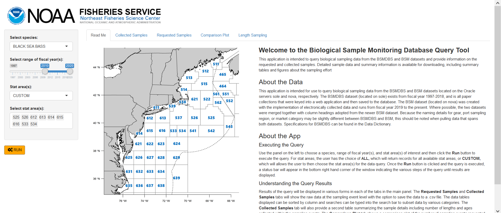
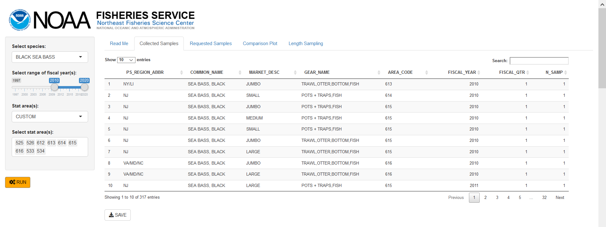
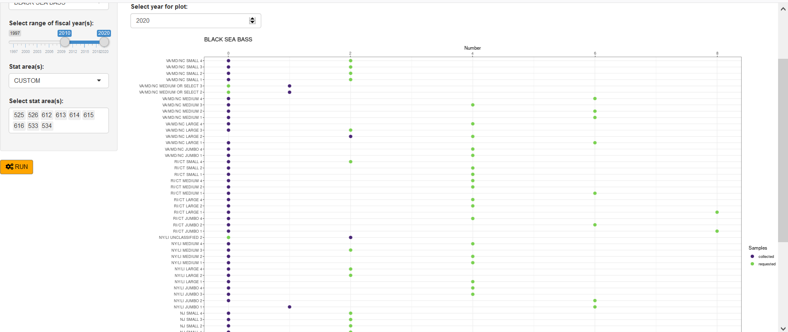
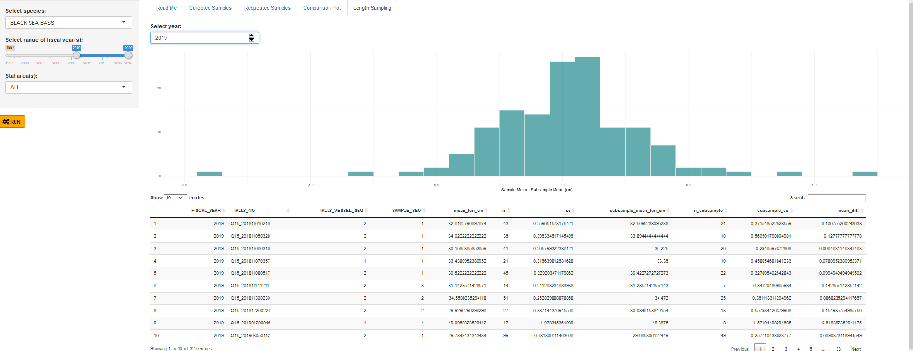

vignettes/BioSamplingApp.Rmd
BioSamplingApp.RmdBiological Sample Monitoring Database Query Tool
Apps Name: Biological Sample Monitoring Database Query Tool
Developer(s): Alicia Miller
Point of contact: Alicia Miller, alicia.miller@noaa.gov (Population Dynamics Branch/Protected Species Branch)
Keywords: commercial fisheries data, stock assessment, biological sampling
Key Packages: odbc, rgdal, DBI, DT, tidyr, dplyr, ggplot2, plotly
GitHub: ALoMiller/BiosamplingQuery
Application Purpose
The Biological Sample Monitoring Database System (BSMDBS) was developed for the Northeast Fisheries Regional Office and the Northeast Fisheries Science Center to record and monitor biological samples of commercially important marine species in the Northwest Atlantic collected by Port Agents. Samples include the collection of animal lengths and age structures (otoliths, scales, spines, etc.) which are strategically requested to attain a representative spatial and temporal sample of the associated stocks. All sampling is performed after the vessel lands their catch. With the implementation of electronically collected data, a modern version of the dataset (BSM) was created as an extension of the sampling effort. Sampling data are most commonly used to inform the stock assessment process, develop length/age models, and to characterize commercial fisheries. This app allows the user to query all existing commercial fisheries biological sampling data, provides summaries of the sampling efforts in interactive figures and tables, and provides a sample size comparison for optimizing sampling efforts and determining future sampling requests.
User Specifications
The user populates the widgets in the interface on the left side of the page (species, range of fiscal years, and stat areas) and then clicks the RUN button to begin the query. A status bar showing progress then appears in the bottom right corner of the page until the process is complete and the app then changes from the Read Me tab to the Collected Samples tab where results are shown.

App Results
Once the query has finished executing, the results are divided into tabs across the top. The Collected Samples tab shows a table of sample collection results that can be sorted, searched, and downloaded followed by some interactive bar plots showing details of the demographics of length and age samples collected each year.

The Requested Samples tab provides a similar table detailing the requested samples for a given year, statistical fishing area, market category, fishing gear configuration, and fiscal quarter. The third tab, Comparison Plot combines the collected and requested sample totals into a figure that shows how well the port samplers were able to carry out the request for a given year. This information can be useful in planning for changes in the upcoming year or tracking where sampling efforts have continuously fallen short.

The final tab, Length Sampling, addresses the number of length samples collected and helps the analyst determine an appropriate number of lengths to be collected to achieve a sound length frequency. The cost of sampling is now paid per length measured, so sample requests need to be carefully thought out. This tab gives a mean length, sample size, and standard error for each sampling event and then compares those statistics to a subsample of 50% less lengths in each sample.

How often is it used?
The Biological Sample Monitoring Database Query Tool is generally used by stock assessment analysts prior to the beginning of a new fiscal year to determine the allocation of their biological sampling requests for the upcoming year. It is also used throughout the year to evaluate the appropriateness of requested samples relative to ongoing fishing operations. The query tool may also be used in the stock assessment process for determining effective sample size information which is required in some analyses. With the addition of age samples being reported, it is possible the Age and Growth scientists may use this app throughout the year to monitor sampling intensity.
Has it been used in management?
Fisheries management may affect the biosampling request process and having a better understanding of the management of a specific fishery will be beneficial in the use of this app. This tool needs to be used with the knowledge of where landings come into port and what statistical areas they were caught. In addition, the analyst should have some idea about any changes in the fishery (quotas, seasonal closures etc.). For example, if the Rhode Island black sea bass fishery doesn’t open until September, requesting 2nd fiscal quarter samples would be a waste of resources. Understanding the life history of a species (such as incoming recruitment events) is important as well when determining allocation of sample requests by market category.